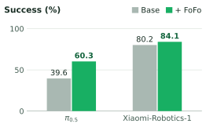
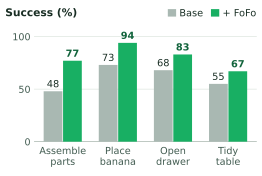
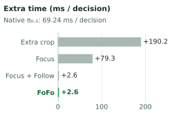
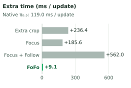
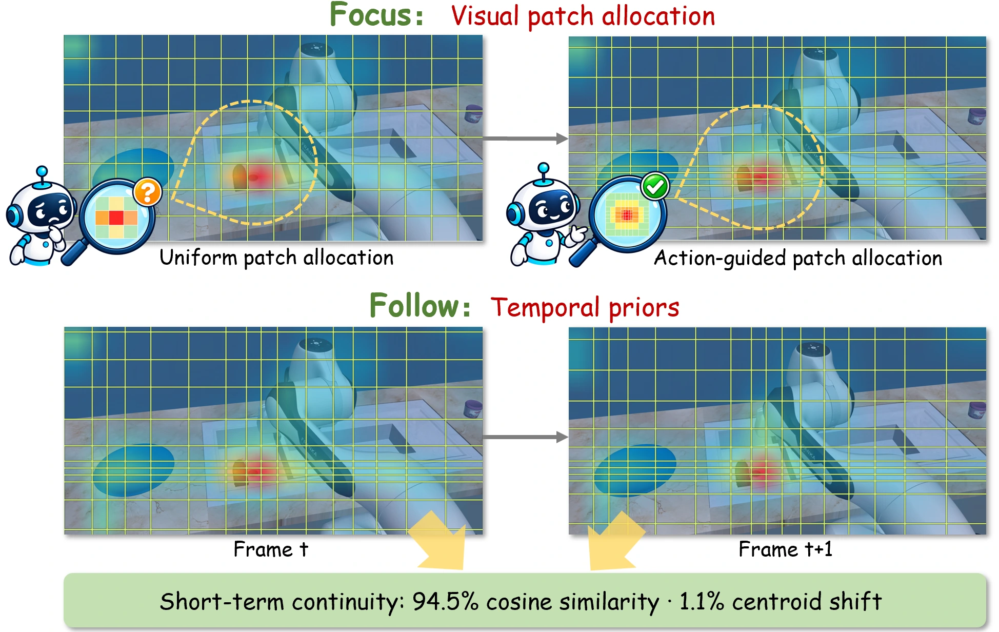
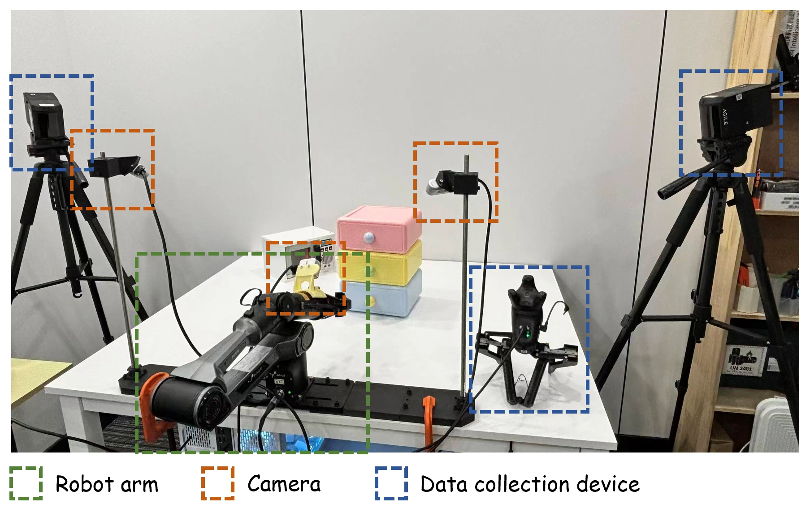

Focus and Follow: Action-Guided Patch Allocation with Temporal Priors for Vision-Language-Action Models
- 1 Institute of Automation, Chinese Academy of Sciences
- 2 University of Science and Technology of China
- 3 Traffic Control Technology Co., Ltd.
In RoboCasa, the robot takes a red mug from a shelf, places it under the dispenser and starts the coffee machine. The center panel shows filtered action-guided attention. The right panel recomputes the patch grid from that same heatmap. The real-robot recording shows a red ring placed on a blue peg from two synchronized cameras, through release and gripper withdrawal.
Key results








Abstract
Recently, vision-language-action (VLA) models have demonstrated exceptional capability in completing specified tasks. However, most VLAs allocate the same patch density to task-relevant regions as to the background. Existing solutions attempt to implicitly strengthen attention of encoded patch features or explicitly increase patches of task-relevant regions through local image cropping, but the former leaves the initial patch allocation unchanged and the latter needs a substantial computational cost. In addition, we observe that the internal attention distribution of the VLA exhibits short-term continuity along manipulation trajectories.
Based on these insights, we propose Focus and Follow (FoFo), an action-guided patch density allocation framework that uses historical attention as a temporal prior. Specifically, Focus uses an action-guided allocation state to assign more patches to task-relevant regions before visual encoding while preserving full-image coverage. Follow uses the historical frame’s attention to determine the allocation state of the current frame and repeats this process at each step.
We further introduce a training strategy, which reuses the allocation state of the current frame to provide temporal priors for two adjacent frames along the trajectory, avoiding repeated historical-attention computation. Extensive evaluations in simulation and real-world environments demonstrate that FoFo can significantly improve model success rates with only a few fine-tuning steps and 2.6 ms of additional inference delay, while achieving a significant 5.31× training speedup over historical-attention recomputation.
Method
Focus
At a drawer handle or a small assembly peg, a few pixels can determine whether a grasp succeeds. Focus changes the spacing of image patches before visual encoding. It mixes action-guided attention (65%) with uniform sampling (35%), so the interaction receives more patches while the full scene remains in view.
Follow
Each trajectory starts with a uniform grid. As the policy predicts an action, it also measures which patches the action attended to. Follow maps that attention back to the camera image and uses it to sample the next observation. One policy pass yields both the current action and the next grid.



Learning from adjacent observations
During fine-tuning, FoFo saves the allocation computed on a demonstration frame. When training returns to that trajectory, a neighboring frame can use the saved state. Separate states track the forward and backward passes through each demonstration, so one supervised forward pass per visit is enough.
At deployment, the robot uses only earlier observations. Each camera image is encoded afresh. If an object moves away from the previous hotspot, the uniform part of the grid still samples its new location.
Experiment
Manipulation across 50 RoboCasa tasks
We fine-tune two robot policies on Human300, which contains 100 human demonstrations for each of 300 tasks. We evaluate each FoFo policy with 50 complete rollouts per task. The benchmark covers 18 Atomic-Seen tasks, 16 Composite-Seen tasks and 16 Composite-Unseen tasks. Each task has equal weight in the overall success rate.
FoFo raises the overall success rate of π0.5 from 16.9% to 32.5%. The largest gain is on Atomic-Seen tasks, where success rises from 39.6% to 60.3%. Xiaomi-Robotics-1 also improves on all three splits, reaching 59.9% overall and 84.1% on Atomic-Seen tasks.
Scroll horizontally to see all columns.
| Policy | Family | Success rate (%) | |||
|---|---|---|---|---|---|
| Atomic-Seen 18 tasks | Composite-Seen 16 tasks | Composite-Unseen 16 tasks | Overall 50 tasks | ||
| Paimon-0 (Primotion) | VLA | 79.3 | 55.8 | 36.7 | 58.1 |
| Xiaomi-Robotics-1 (Xiaomi Robotics) | VLA | 80.2 | 57.1 | 32.1 | 57.4 |
| Phasor-m7 (Phasor) | VLA | 78.7 | 57.4 | 31.5 | 56.8 |
| Meituan-Robotics-0 (Meituan Robotics) | VLA | 77.3 | 57.8 | 27.1 | 55.0 |
| LoopWAM (Guo et al.) | WAM | 78.0 | 48.3 | 15.4 | 48.5 |
| ProWAM (Zhang et al.) | WAM | 76.0 | 46.5 | 18.2 | 48.1 |
| PatchWAM (Wang et al.) | WAM | 78.7 | 46.4 | 13.8 | 47.6 |
| ABot-M0.5 (Chen et al.) | WAM | 75.6 | 37.7 | 3.3 | 40.3 |
| PRTS (Zhang et al.) | VLA | 66.3 | 30.3 | 18.8 | 39.6 |
| RLDX-1 (Kim et al.) | VLA | 67.6 | 27.9 | 8.5 | 36.0 |
| WorldDreamer (World Agents) | WAM | 66.3 | 26.7 | 9.0 | 35.3 |
| GR00T N1.5 (NVIDIA) | VLA | 50.7 | 14.8 | 2.7 | 23.9 |
| LY-GWM-RoboCasa (Ma et al.) | VLA + WM | 48.3 | 16.3 | 3.1 | 23.6 |
| GR00T N1.6 (NVIDIA) | VLA | 51.1 | 9.4 | 1.7 | 21.9 |
| GigaWorld-Policy 0.1 (Ye et al.) | WAM | 44.4 | 11.8 | 2.9 | 20.7 |
| π0.5 (Black et al.) | VLA | 39.6 | 7.1 | 1.2 | 16.9 |
| π0 (Black et al.) | VLA | 34.6 | 6.1 | 1.1 | 14.8 |
| Diffusion Policy (Chi et al.) | Visuomotor | 15.7 | 0.2 | 1.3 | 6.1 |
| π0.5 + FoFo | VLA | 60.3 (+20.7) | 26.5 (+19.4) | 7.3 (+6.1) | 32.5 (+15.6) |
| Xiaomi-Robotics-1 + FoFo | VLA | 84.1 (+3.9) | 59.5 (+2.4) | 33.1 (+1.0) | 59.9 (+2.5) |
Baseline values are from the November 1, 2026 RoboCasa365 leaderboard. Parentheses give the change in percentage points from each policy’s published baseline. Bold values mark the highest success rate in each column.
Patch allocation and runtime
To isolate the effect of each component, we initialize all five configurations from the same pretrained π0.5, train each for 800 steps on five NVIDIA RTX 6000 GPUs, and evaluate on the 18 Atomic-Seen tasks. Each decision executes five actions. Table 2 reports this controlled experiment separately from the main benchmark in Table 1.
An extra local crop raises the visual budget from 768 to 1,024 patches. Focus redistributes the original 768 patches, increasing the mean count in task-relevant regions from 25.00 to 64.67 and raising success from 41.3% to 62.8%. Follow carries attention into the next decision, reducing the number of decodes from two to one and inference time from 148.59 to 71.86 ms.
Scroll horizontally to see all columns.
| Policy | Components | Visual processing | Success and runtime | |||||||
|---|---|---|---|---|---|---|---|---|---|---|
| Focus | Follow | State reuse during training | Task-relevant patches mean count | Total visual patches | Decodes per decision | Success ↑ % | Inference ↓ ms/decision | Training ↓ s/update | Speedup ↑ × | |
| Native π0.5 | No | No | No | 25.00 | 768 | 1 | 41.3 | 69.24 | 0.119 | 5.72 |
| π0.5 + extra local crop | No | No | No | 51.8 | 1024 | 2 | 55.3 | 259.42 | 0.355 | 1.92 |
| π0.5 + Focus | Yes | No | No | 64.67 | 768 | 2 | 62.8 | 148.59 | 0.305 | 2.24 |
| π0.5 + Focus + Follow | Yes | Yes | No | 64.67 | 768 | 1 | 62.9 | 71.86 | 0.681 | 1.00 |
| π0.5 + FoFo (full) | Yes | Yes | Yes | 64.67 | 768 | 1 | 63.0 | 71.86 | 0.128 | 5.31 |
Inference time is the mean per decision. Training time is the median per optimizer update. Training speedup is relative to Focus + Follow with history recomputation (1.00×).
Reusing the allocation state cuts training time from 0.681 to 0.128 seconds per update, a 5.31× speedup over recomputing the previous attention. Full FoFo reaches 63.0% success with one decode per decision. Relative to native π0.5, it adds 2.6 ms per decision and 9.1 ms per training update.
RoboCasa rollouts
Ten successful π0.5 + FoFo episodes from the 17-task study. The clips replay the recorded actions at 2× speed.
Real-robot demonstrations


We collected 100 demonstrations per task by teleoperating a six-axis AgileX PiPER arm with a PIKA handheld unit. Two external cameras record the workspace, and a wrist camera captures close interactions. The four demonstrations below play at their recorded speed.
We evaluated each policy in 100 trials per task with varied object placements. Assembly showed the largest gain, from 48 to 77 successes. In the task-relevant region, the mean patch count rose from 25 to 79, giving the policy a denser view of the small part and its target peg.